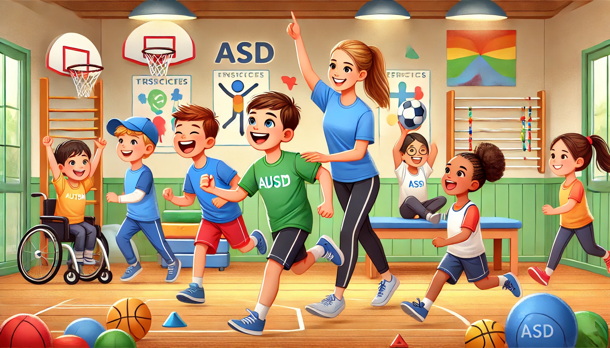

A prática regular de atividades físicas é crucial para o desenvolvimento saudável de todas as crianças, e isso não é diferente para aquelas com Transtorno do Espectro Autista (TEA). A educação física desempenha um papel vital na melhoria da qualidade de vida dessas crianças, proporcionando benefícios tanto físicos quanto emocionais.
Estudos demonstram que a atividade física pode ajudar a melhorar a coordenação motora, o equilíbrio e a força muscular de crianças com TEA. Além disso, as atividades físicas promovem a socialização, ajudando as crianças a desenvolverem habilidades sociais importantes através da interação com seus pares em um ambiente estruturado.
Outro aspecto fundamental é o impacto positivo na saúde mental. A prática de exercícios físicos é conhecida por reduzir os níveis de ansiedade e estresse, comuns em crianças com TEA. A liberação de endorfinas durante a atividade física contribui para a melhoria do humor e do bem-estar geral.
Benefícios da Educação Física
Os benefícios da educação física para crianças com autismo são inúmeros. Além dos benefícios físicos já mencionados, a atividade física regular pode ajudar a melhorar a concentração e o foco, fatores essenciais para o desempenho acadêmico. Atividades estruturadas também podem ensinar a importância da rotina e da disciplina.
Ademais, a educação física pode ser uma excelente oportunidade para a inclusão. Ao participar de atividades em grupo, as crianças com TEA têm a chance de se sentir parte de uma comunidade, desenvolvendo um senso de pertencimento e auto-estima.
"A atividade física não apenas melhora a saúde física, mas também promove o bem-estar emocional e social, transformando a vida das crianças com TEA." - Especialista em Educação Física
Estratégias para Educadores Físicos
Para maximizar os benefícios da educação física para crianças com TEA, os educadores devem estar preparados para adaptar suas abordagens e estratégias. Isso pode incluir o uso de instruções visuais, a criação de um ambiente previsível e estruturado, e a introdução gradual de novas atividades para evitar sobrecarga sensorial.
É importante também que os educadores físicos trabalhem em estreita colaboração com os pais e outros profissionais, como terapeutas ocupacionais e psicólogos, para desenvolver um plano de atividade física que atenda às necessidades específicas de cada criança.
 A atividade física pode ser transformadora para crianças com TEA, proporcionando inúmeros benefícios para a saúde e o bem-estar.Em suma, a educação física tem o poder de transformar a vida de crianças com autismo, melhorando sua saúde física, mental e emocional. Com o apoio e a orientação adequados, essas crianças podem aproveitar ao máximo os benefícios da atividade física, levando a uma vida mais saudável e feliz.